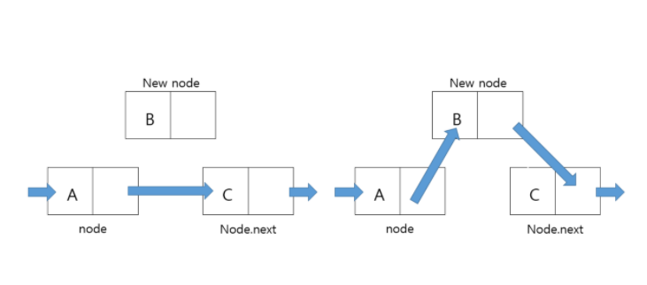
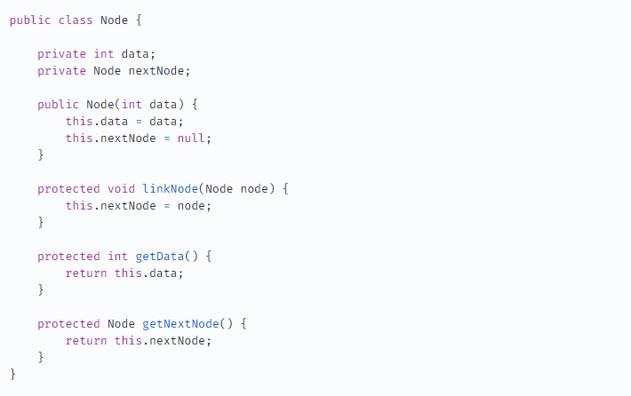

Stack
stack이란?
스택(stack)이란 쌓아 올린다는 것을 의미한다. 따라서 스택 자료구조라는 것은 책을 쌓는 것처럼 차곡차곡 쌓아 올린 형태의 자료구조를 말한다. 스택은 위의 사진처럼 같은 구조와 크기의 자료를 정해진 방향으로만 쌓을수 있고, top으로 정한 곳을 통해서만 접근할 수 있다. top에는 가장 위에 있는 자료는 가장 최근에 들어온 자료를 가리키고 있으며, 삽입되는 새 자료는 top이 가리키는 자료의 위에 쌓이게 된다. 스택에서 자료를 삭제할 때도 top을 통해서만 가능하다. 스택에서 top을 통해 삽입하는 연산을 'push' , top을 통한 삭제하는 연산을 'pop'이라고 한다.
스택은 시간 순서에 따라 자료가 쌓여서 가장 마지막에 삽입된 자료가 가장 먼저 삭제된다는 구조적 특징을 가지게 된다.이러한 스택의 구조를 후입선출(LIFO, Last-In-First-Out) 구조이라고 한다.
스택 활용 예시
스택의 특징인 후입선출(LIFO)을 활용하여 여러 분야에서 활용 가능하다.
- 웹 브라우저 방문기록 (뒤로 가기) : 가장 나중에 열린 페이지부터 다시 보여준다.
- 역순 문자열 만들기 : 가장 나중에 입력된 문자부터 출력한다.
- 실행 취소 (undo) : 가장 나중에 실행된 것부터 실행을 취소한다.
- 후위 표기법 계산
- 수식의 괄호 검사 (연산자 우선순위 표현을 위한 괄호 검사)
코드 예시 - java
다음과 같이 stack을 생성할 수 있다.
Stack클래스는 기본적으로 다음과 같은 함수를 지원한다.

다음의 예제를 통해 함수를 사용해보도록 한다.
위 함수들 중 search의 동작방식을 따로 살펴보면 search는 인덱스를 반환하는 것이 아니라 순번을 반환하는 것이다.
즉 search의 인자 값으로 받은 값이 스택 구조에서 몇번째에 있는지를 반환하는 것이다.
stack 구현 - java
1. 배열 구현
2. linked list 구현
linkedlist로 Stack을 구현하는 것은 배열 보다 복잡하지만 linkedlist의 특성만 잘 안다면 쉽게 구현할 수 있다.
linkelist로 Stack을 구현하기 위해 먼저 Node를 만들어 주어야 한다. linkedlist는 Node로 구성되어 있으며 노드는 데이터와 다음 노드를 가르키는 주소로 구성되어 있다.

Node 클래스를 생성하고 Stack에서는 해당 Node를 사용하여 LinkedList를 구현해야한다.
